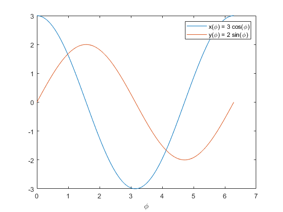
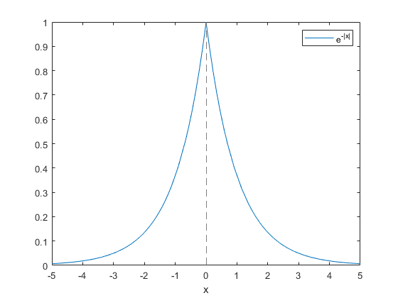

Дальнейший функционал Матлаба
Contents
Анонимная функция
f = @(x) sin(x.^2);
[f(0), f(sqrt(pi/2)), f(2)]
ans =
0 1.0000 -0.7568
x = linspace(-sqrt(4*pi), sqrt(4*pi), 31);
figure(1);
plot(x, f(x));
legend('sin(x^2)');
xlabel('x');
Функция, зависящая от параметра
phi = linspace(0, 2*pi);
x = 3 * cos(phi);
y = 2 * sin(phi);
figure(2);
plot(phi, x); hold on;
plot(phi, y); hold off;
legend('x(\phi) = 3 cos(\phi)', 'y(\phi) = 2 sin(\phi)');
xlabel('\phi');

figure(3);
plot(x, y);
axis([-3.5 3.5 -2.5 2.5]);
axis('equal');
xlabel('x');
ylabel('y');
title('x^2/9 + y^2/4 = 1');
xt = @(t) cos(3*t);
yt = @(t) sin(2*t);
figure(4);
fplot(xt,yt, [0 pi]);
xlabel('x');
ylabel('y')
Рисуем функции без сетки
f = @(x) exp(-abs(x));
figure(5);
fplot(f);
ylim([0, 1])
legend('e^{-|x|}');
xlabel('x');

Функция двух переменных на сетке
[x, y] = meshgrid(1:3, 4:6);
z = x + 1i*y;
disp(z);
1.0000 + 4.0000i 2.0000 + 4.0000i 3.0000 + 4.0000i
1.0000 + 5.0000i 2.0000 + 5.0000i 3.0000 + 5.0000i
1.0000 + 6.0000i 2.0000 + 6.0000i 3.0000 + 6.0000i
f = y - x;
figure(6);
contour(x, y, f);
contourf(x, y, f, '--r', 'ShowText', 'on', 'LineWidth', 1.6);
xlabel('x');
ylabel('y');
title('f(x, y) = y - x');
[x, y] = meshgrid(linspace(-2*pi, 2*pi, 101), linspace(-2*pi, 2*pi, 101));
f = x.*sin(y) - y.*cos(x);
figure(7);
contour(x, y, f, [0 2 4 6], 'ShowText', 'on');
xlabel('x');
ylabel('y');
title('$f(x, y) = x \sin(y) - y \cos(x)$', 'Interpreter', 'latex');
Функция двух переменных без сетки
f = @(x,y) 3*(1-x).^2.*exp(-(x.^2)-(y+1).^2)...
- 10*(x/5 - x.^3 - y.^5).*exp(-x.^2-y.^2)...
- 1/3*exp(-(x+1).^2 - y.^2);
figure(8);
fcontour(f, [-3 3], ...
'-k', 'MeshDensity', 171, 'Fill', 1, 'LevelStep', 1);
ylabel('$y$', 'Interpreter', 'latex', 'FontSize', 16);
xl = xlabel('$x$');
xl.Interpreter = 'latex'; xl.FontSize = 16;
title({'$f(x, y) = 3(1-x)^2 \, e^{-(x^2)-(y+1)^2} -$', ...
'$- 10(\frac{x}{5} - x^3 - y^5) \, e^{-x^2-y^2} - \frac{1}{3} \, e^{-(x+1)^2 - y^2}$'},...
'Interpreter', 'latex', 'FontSize', 14);